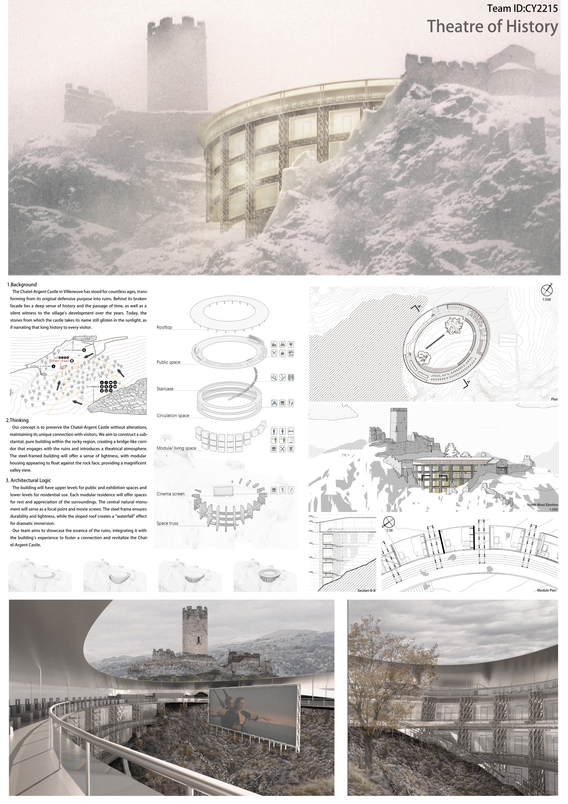

作品集
Works
Vertical Garden
As modern cities evolve toward vertical expansion, the horizontal layout of traditional gardens can hardly meet the needs of high-density human settlements. This design extracts the land textures and spatial topology of renowned Suzhou gardens, refines them into abstract geometric forms, and then reorganizes these forms with contemporary architectural vocabulary to construct a vertical garden standing beside the Summer Palace.

Bicycle Community
This project takes the dual meanings of "cycling" as its core conceptual anchor, deeply integrating the spatial and functional attributes of "bicycling" with the sustainable design philosophy of "recycling", so as to create a multifunctional community space threaded by bicycles and supported by reusable steel structures.

Autonomous Vehicle Incubator
Launched to explore how emerging AI image generation technologies can be applied in design, this project transforms Dongsheng Building in Beijing's tech core district into an incubator tailored to the autonomous driving vehicle industry — spanning Robobus, Robotaxi, port operations, logistics, and last-mile delivery.

Fusuijing Haunted House
Centered on the innovative approach of spatial translation of films from four relevant historical periods, this design seamlessly integrates exhibition halls, dynamic livehouses, immersive theaters, and thematic museums into the building's original structural framework — injecting a vibrant new lease on life into this weathered, time-honored structure.

Other Works
DigitalFUTURES 2025 workshop — Robotic Spatial Intelligence: World Models for Autonomous Manipulation. Explores spatial intelligence world models in digital fabrication and robotic manipulation contexts.
